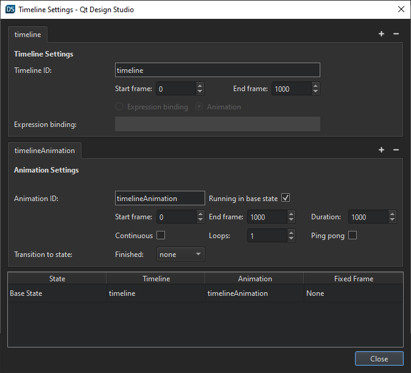
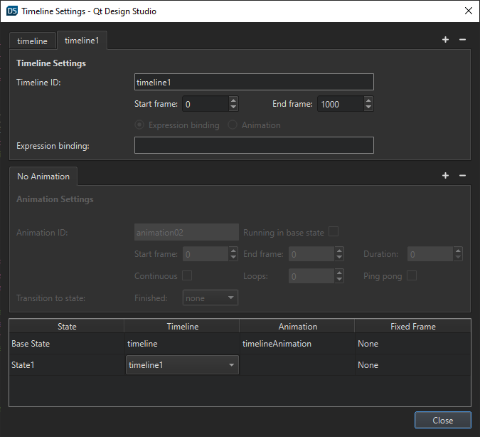
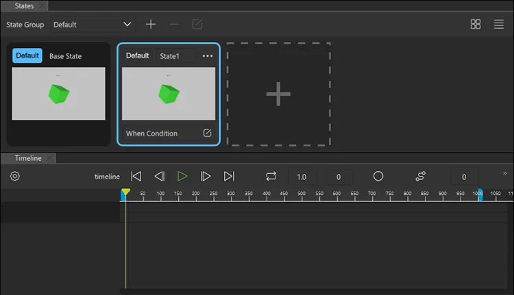
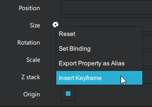
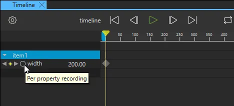
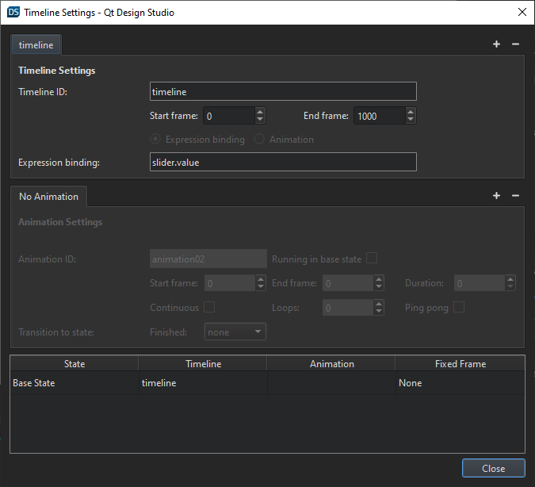
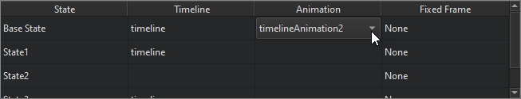
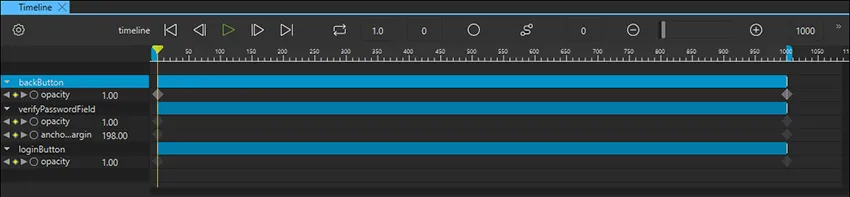
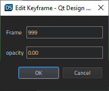

Creating Timeline Animations
You can create timelines and keyframe-based animations for linear interpolation through intermediate values at specified keyframes instead of immediately changing to the target value.
You can also bind the timeline to a property value of a component such as a slider and control the animation this way.
Creating an Animation
To create an animation, whether it's a keyframe animation or an animation bound to a property value, you first need to create a timeline.
Creating a Timeline
To create a timeline to animate a UI component:
- In the Timeline view, select the
 (Add Timeline) button to specify settings for the timeline and running the animation in the Timeline Settings dialog.
(Add Timeline) button to specify settings for the timeline and running the animation in the Timeline Settings dialog. - On the Timeline Settings tab:
- In the Timeline ID field, enter an id that describes the timeline.
- In the Start frame field, set the first frame of the timeline. Negative values are allowed.
- In the End frame field, set the last frame of the timeline.

- On the Animation Settings tab:
- In the Animation ID field, enter an ID for the animation.
- Optional. Select the Running in Base State check box to run the animation when the base state is applied. Clear the check box to run the animation when some other state is applied. For more information, see Binding Animations to States.
- In the Start frame field, set the first frame of the animation.
- In the End frame field, set the last frame of the animation.
- In the Duration field, set the length of the animation in milliseconds.
- Optional. Select the Continuous check box to loop the animation indefinitely.
- Optional. In the Loops field, set the number of times to run the animation. The default number of loops is one, which means that you must restart the animation to see it again.
- Optional. Select the Ping pong check box to play the animation backwards back to the beginning when it reaches the end.
- Optional. In the Finished field, select the state to transition to when the animation finishes.
- Select Close to close the dialog and save the settings.
Now, with the settings set for the timeline and the animation, you set the keyframes for the properties to animate.
Creating Additional Timelines
You can create more than one timeline. The purpose of several timelines is to use different timelines in different states.
To create a timeline for a second state:
- In Timeline, open the Timeline Settings dialog.
- Next to the Timeline Settings tab, select . This creates another timeline.
- In the table below the Animation Settings tab, set the Timeline for the state where you want to use it.

To set the keyframe values for the timeline you created, first select the state in States and the timeline is available in Timelines.

Setting Keyframe Values
When you create a timeline, Qt Design Studio creates one animation for the timeline. You can create as many animations for a timeline as you want. For example, you can create animations to run just a small section of the timeline or to run the timeline backwards.
To animate components in the Timeline view, you set keyframe values for the property to animate. Qt Design Studio automatically adds keyframes between two keyframes and sets their values evenly to create, for example, movement or transformation.
To set keyframe values for a component property:
- In the Navigator view, select the component to animate.
- In the Properties view, select
 (Actions) > Insert Keyframe for the property that you want to animate.
(Actions) > Insert Keyframe for the property that you want to animate.
- In the Timeline view, select the Per Property Recording button to start recording property changes.

- Ensure that the playhead is in frame 0 and enter the value of the property in the field next to the property name on the timeline. Press Enter to save the value.
- Move the playhead to another frame on the timeline and specify the value at that frame. For more information, see Navigating in Timeline.
- When you have specified as many values as you need, select Per Property Recording again to stop recording.
Binding a Timeline to a Property
When you bind a timeline to a component property, the animation's current frame is controlled by the value of the property.
In this example, you bind the timeline to a slider component.
With a timeline created and keyframe values set:
- From Components, drag a slider to the 2D or Navigator view.
- In Navigator, select slider and in Properties, set:
- To to 1000.
Note: The From and To values of the slider should match the Start Frame and End Frame values of the timeline if you want to control the complete animation with the slider.
- To to 1000.
- In the Timeline Settings dialog, select
 next to the Animation Settings tab to delete the animation. If you have several animations, delete all.
next to the Animation Settings tab to delete the animation. If you have several animations, delete all. - In Expression binding, enter
slider.value.
Binding Animations to States
You can bind animations to states, this means that the animation will run when you enter the state.
To bind an animation to a state:
- In the table at the bottom of the Timeline Settings dialog lists:
- Double-click the value in the Timeline field and select the timeline with the animation you want to bind to the state.
- Double-click the value in the Animation field and select the animation you want to bind to the state.

To bind a state to a certain keyframe in an animation without running the animation, set the keyframe in the Fixed Frame field.
Managing Keyframes

Editing Keyframes
To remove all the changes you recorded for a property, right-click the property name on the timeline and select Remove Property.
To add keyframes to the keyframe track of a component at the current position of the playhead, right-click the component name on the timeline and select Add Keyframes at Current Frame.
Keyframes are marked on the timeline by using markers of different colors and shapes, depending on whether they are active or inactive or whether you have applied easing curves to them.
Editing Keyframe Values
To fine-tune the value of a keyframe, double-click a keyframe marker or right-click it and select Edit Keyframe in the context menu.
The Edit Keyframe dialog displays the name of the property you are animating and its current value at the frame specified in the Frame field. You can change both the keyframe and its value.

Copying Keyframes
You can copy the keyframes from the keyframe track for a component and paste them to the keyframe track of another component.
To copy all keyframes from one track to another one:
- Right-click the component ID and select Copy All Keyframes in the context menu.
- Right-click the other component ID, and select Paste Keyframes in the context menu.
Deleting Keyframes
To delete a keyframe, right-click it and select Delete Keyframe in the context menu.
To delete all keyframes from the selected component, right-click the component name in Timeline and select Delete All Keyframes in the context menu.
Viewing the Animation
To preview your animation, do one of the following in the Timeline view:
- Drag the playhead along the timeline.
- Select
 button or press Space.
button or press Space.
To preview the whole UI, select the Live Preview button on the top toolbar or press Alt + P.
Animating Rotation
To animate components that rotate around a central point, you can use the Item component as a parent for the rotating component. Then create a timeline for the Item, and set the rotation property for the start and end keyframes.
Animating Shapes
You can use the Qt Quick Studio Components to animate the following shapes: